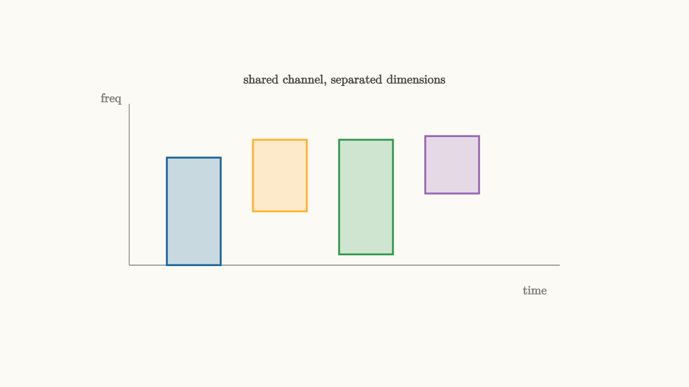

Multiple Users Share Dimensions
A single communication link is already a coordination problem. A network adds a harder question: how can many users share the same physical medium?
The answer is multiple access. Users can be separated in time, frequency, code, space, or some combination of these. Each method creates dimensions that the receiver can use to tell signals apart.

source
background = [0.985, 0.98, 0.955, 1]
camera = Camera(4.8b)
mesh diagram = block {
. stroke{GRAY, 1} Line(start: [-3.0, -1.0, 0], end: [3.0, -1.0, 0])
. stroke{GRAY, 1} Line(start: [-3.0, -1.0, 0], end: [-3.0, 1.25, 0])
. fill{alpha{0.22} BLUE} stroke{BLUE, 2} center{[-2.1, -0.25, 0]} Rect([0.75, 1.5])
. fill{alpha{0.22} ORANGE} stroke{ORANGE, 2} center{[-0.9, 0.25, 0]} Rect([0.75, 1.0])
. fill{alpha{0.22} GREEN} stroke{GREEN, 2} center{[0.3, -0.05, 0]} Rect([0.75, 1.6])
. fill{alpha{0.22} PURPLE} stroke{PURPLE, 2} center{[1.5, 0.4, 0]} Rect([0.75, 0.8])
. center{[0, 1.58, 0]} color{DARK_GRAY} Text("shared channel, separated dimensions", 0.62)
. center{[2.65, -1.35, 0]} color{GRAY} Text("time", 0.62)
. center{[-3.25, 1.32, 0]} color{GRAY} Text("freq", 0.62)
}
"resource grid"
play Fade(0.6)The simplest separations are easy to picture.
Frequency-division multiple access gives users different bands. Time-division multiple access gives users different slots. Code-division multiple access gives users different spreading codes. Orthogonal frequency-division multiple access gives users sets of subcarriers and time slots. Spatial multiple access uses antennas and geometry to separate users arriving from different directions.
These are not merely administrative choices. Each method creates a signal model.
Orthogonality is the clean ideal
Two signals are easy to separate when their inner product is zero. In that case, a receiver matched to one signal ignores the other.
Different frequency channels can be orthogonal over a time window. Different time slots avoid overlap. Good spreading codes have small cross-correlations. Antenna arrays can form spatial filters that place gain toward one user and reduce gain toward another.
The shared theme is projection. Each receiver asks, "How much of the received waveform lies in my user's dimension?"
source
background = [0.985, 0.98, 0.955, 1]
camera = Camera(4.8b)
"time slots"
mesh title = center{[0, 1.6, 0]} color{DARK_GRAY} Text("many ways to create separable dimensions", 0.62)
mesh grid = block {
. stroke{GRAY, 1} Line(start: [-2.8, -1.05, 0], end: [2.8, -1.05, 0])
. fill{alpha{0.22} BLUE} stroke{BLUE, 2} center{[-1.8, -0.35, 0]} Rect([0.72, 1.4])
. fill{alpha{0.22} ORANGE} stroke{ORANGE, 2} center{[-0.4, -0.35, 0]} Rect([0.72, 1.4])
. fill{alpha{0.22} GREEN} stroke{GREEN, 2} center{[1.0, -0.35, 0]} Rect([0.72, 1.4])
}
mesh label = center{[0, -1.65, 0]} color{DARK_GRAY} Text("TDMA: users take turns", 0.62)
play Write(0.8)
play Fade(0.6)
"frequency bands"
grid = block {
. stroke{GRAY, 1} Line(start: [-2.8, -1.05, 0], end: [2.8, -1.05, 0])
. stroke{GRAY, 1} Line(start: [-2.8, -1.05, 0], end: [-2.8, 1.05, 0])
. fill{alpha{0.22} BLUE} stroke{BLUE, 2} center{[-0.3, -0.65, 0]} Rect([4.5, 0.34])
. fill{alpha{0.22} ORANGE} stroke{ORANGE, 2} center{[-0.3, 0.0, 0]} Rect([4.5, 0.34])
. fill{alpha{0.22} GREEN} stroke{GREEN, 2} center{[-0.3, 0.65, 0]} Rect([4.5, 0.34])
}
label = center{[0, -1.65, 0]} color{DARK_GRAY} Text("FDMA: users occupy bands", 0.62)
play Trans(1.0)
play Fade(0.3)
"codes"
grid = block {
. stroke{BLUE, 3} ExplicitFunc(|t| 0.55 * sin(5.0 * t), [-2.6, 2.6, 220])
. stroke{ORANGE, 3} ExplicitFunc(|t| 0.45 * sin(7.0 * t + 0.6), [-2.6, 2.6, 220])
. stroke{GREEN, 3} ExplicitFunc(|t| 0.35 * sin(11.0 * t + 1.2), [-2.6, 2.6, 220])
. center{[0, 0.95, 0]} color{DARK_GRAY} Text("overlap in time and frequency", 0.62)
}
label = center{[0, -1.65, 0]} color{DARK_GRAY} Text("CDMA: codes separate projections", 0.62)
play Trans(1.0)
play Fade(0.3)
"resource grid"
grid = block {
. stroke{GRAY, 1} Line(start: [-2.8, -1.05, 0], end: [2.8, -1.05, 0])
. stroke{GRAY, 1} Line(start: [-2.8, -1.05, 0], end: [-2.8, 1.05, 0])
. fill{alpha{0.22} BLUE} stroke{BLUE, 2} center{[-1.8, -0.5, 0]} Rect([0.72, 0.46])
. fill{alpha{0.22} BLUE} stroke{BLUE, 2} center{[-1.0, -0.5, 0]} Rect([0.72, 0.46])
. fill{alpha{0.22} ORANGE} stroke{ORANGE, 2} center{[-0.2, 0.0, 0]} Rect([0.72, 0.46])
. fill{alpha{0.22} GREEN} stroke{GREEN, 2} center{[0.6, 0.5, 0]} Rect([0.72, 0.46])
. fill{alpha{0.22} PURPLE} stroke{PURPLE, 2} center{[1.4, 0.0, 0]} Rect([0.72, 0.46])
}
label = center{[0, -1.65, 0]} color{DARK_GRAY} Text("OFDMA schedules tiles", 0.62)
play Trans(1.0)
play Fade(0.3)The slideshow changes the same shared channel into time slots, frequency bands, codes, and a resource grid. Each view is a different coordinate system for sharing.
Synchronization keeps dimensions separate
Multiple access depends on alignment. Time slots need clocks. Frequency channels need carrier accuracy and filters. Codes need timing good enough for correlation to work. OFDM and OFDMA need tight time and frequency alignment so subcarriers remain orthogonal.
When synchronization fails, dimensions leak into each other. A user spills outside a time slot. A carrier drifts into a neighbor's band. A code loses its correlation advantage. A subcarrier loses orthogonality and becomes interference.
This ties multiple access back to the receiver topics from earlier lessons. Matched filters, symbol timing, carrier recovery, and frame sync are the machinery that lets sharing rules work in a physical channel.
Sharing is also a policy problem
Even perfect signal separation leaves policy questions. Who gets resources when demand is high? Which user needs low latency? Which user has a weak channel and needs more robust coding? Which transmission would interfere with nearby receivers?
Modern systems schedule resources dynamically. A cellular base station assigns time-frequency tiles, modulation, coding rate, and power based on channel measurements and traffic needs. Wi-Fi uses contention and coordination rules. Satellite and optical systems add their own constraints.
The math gives dimensions. The protocol decides how to allocate them.
The series thread
Digital communication began with symbols. Pulse shaping turned symbols into waveforms. Matched filtering collected pulse energy. Timing recovery found the eye center. Carrier synchronization stabilized the constellation. Frame sync found the start of the message. Multiple access lets many such messages share a medium.
The common idea is structure. The transmitter creates structure that the channel distorts and the receiver recovers. Good communication design makes that structure visible enough to survive noise, drift, and neighbors.